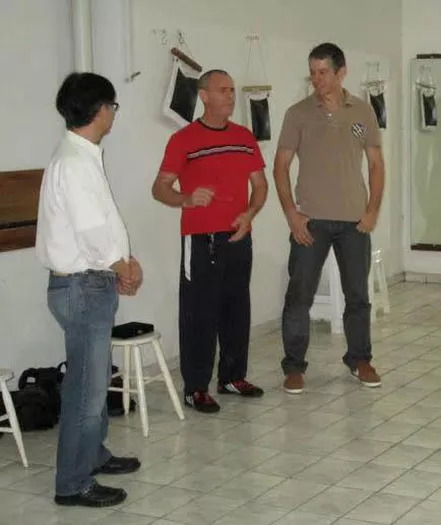

Encontrando o Mestre
Por Thomas Pinheiro
Um pouco sobre o aprendizado de wing chun de Thomas Pinheiro com seu sifu Thomas Lo... Thomas Pinheiro tentou ter aula com mestre Lo em 1983, após ter treinado por um ano e meio com um brasileiro, lembra que na época conseguiu um endereço de um antigo aluno de mestre Lo, naquela época, mestre Lo não estava dando aula em academia e aulas eram somente em sua casa e de forma muito restrita, para alguns.
Em 1986, Thomas Pinheiro treinando pela familia do mestre Augustine Fong, descobriu que mestre Thomas Lo voltara a dar aulas abertamente. Muito curioso, e sabendo estar muito próximo ao espaço onde ocorriam as aulas, fora um dia visitar. O encontro fora bem inusitado, porém com seus 19 anos Thomas Pinheiro percebeu diferenças nas duas escolas mas não conseguia entender bem o que era.
Acabara de voltar de uma estada na academia do mestre Fong nos U.S.A. Neste primeiro encontro ainda lembra que fez demonstração do siu lin tao, depois praticou dan chi com mestre Lo e então fora praticar chi sau com o aluno mais antigo de mestre Lo. Foi bem quente, com entradas de ataques bem nervosos, até que depois de pancadas daqui e outra dali mestre Lo pediu para encerrar.
A partir desse dia ficamos amigos (lembra T. Pinheiro). Respeitosamente Thomas Pinheiro passou a visitar pelo menos uma vez por semestre mestre Lo.Thomas Pinheiro percebeu ser muito diferenciado o nível do mestre Lo, porém não acreditava na época conseguir aprender algo com os alunos mais antigos do mestre Lo, pois se quisesse treinar, seria com eles.
Em 1995 Thomas Pinheiro inaugurou seu espaço de treino particular, e reencontrando mestre Lo, o convidou para montar seu consultório de acupuntura e também dar aulas de tai chi chuan. Com a presença de Mestre Lo, todas vez que acabava de dar aula, Thomas Pinheiro conversava sobre wing chun com mestre Lo, este mostrava sempre alguma coisa diferente.
Quando vinham visitas de alunos do mestre Lo, Thomas Pinheiro sempre convidava para prática de chi sau, o que acabou despertando para detalhes que não havia aprendido. Foi então que depois de fazer duas longas seções de uma hora de chi sau com bastante agressividade com Francisco Dias, Thomas Pinheiro percebeu que mesmo tendo se empenhado tanto lhe faltava detalhes preciosos nas técnicas
Francamente não era tão diferente do que já havia praticado, mas detalhe é detalhe, e é o que acaba fazendo a diferença. De forma humilde reiniciou tudo de novo com muito esforço. Mestre Lo nunca deu canja, rs, sempre pegou pesado, mestre de falar pouco e exigir muito. Não tinha paciencia para ensinar, apenas explicava uma vez e se não conseguia fazer... levava tapa, rsrsrs.
Testava o psicológico e ainda testa frequentemente. Mestre Lo tinha fama de esconder suas técnicas, mas com o tempo Pinheiro percebeu que não era bem assim, ele apenas ensinava para quem realmente demonstrava afinidade com a arte e postura ética. Thomas Pinheiro lembra ter treinado Siu lim tau por dois anos, posteriormente mais dois anos de chum kiu.
O dia em que iniciou seu aprendizado de bue tze foi em treino particular, ninguém aparecera para treinar numa noite chuvosa. O treino de mook jong e armas vieram por volta de 2000, apenas treinavam Francisco, Pinheiro e mais um aluno antigo que já abandonou os treinos. Mestre Lo possibilitou a Thomas Pinheiro rever seus antigos aprendizados e formas, e remolda-los com correções e detalhes a mais para que pudessem funcionar com melhor êxito.
Desde que começou a receber técnicas de wing chun com seu atual sifu, Thomas Lo, por volta de 1996, Thomas Pinheiro se entregou fortemente ao treino, lembra que sua academia não fechou e tão pouco encerrou seus ensinamentos naquela época, mas a medida que ía treinando mais com mestre Lo, fora modificando sua forma de ensinar, seus métodos de prática e a própria técnica em si, mais refinda.
Estamos em 2015, nestes 19 anos treinando com mestre Lo, pelo menos entre os anos de 1996 a 2004, Thomas Pinheiro teve treino diário com mestre Lo, o que considera um afortunado, pois neste tempo todo nunca viu outro companheiro de treino estar tão próximo do mestre treinando tanto. Menção especial a seu si hing no Wing Chun e grande amigo fora da academia, Francisco Dias, que treinava muito também particularmente, e junto com Thomas Pinheiro permitiu muito desenvolvimento no estilo. Francisco é um excepcional lutador, e muito rico tecnicamente, sem falar de sua resistencia fisica, um verdadeiro tanque de guerra.
"Lembro de estar machucado seriamente em um momento, ainda assim treinava pela tarde em minha academia, depois saía para treinar a noite com Francisco, treinava sentado movimentos de wing chun e depois pelo menos 45min de chi sau, e voltava ainda a noite para minha academia em pinheiros para treinar com meus alunos. Com Francisco Dias tive todo estudo sobre aplicação de chum kiu e bue tze, com mestre Lo corrigindo ou dando novas idéias".
Mestre Thomas Lo atualmente não ensina mais wing chun, apenas de forma não convencional, sem ser em treino aberto, de forma pessoal. Suas anotações, fotos antigas, (algumas particulares e muitas de treino), incluindo fotos de um livro não lançado no Brasil, na década de 1980, ficaram para Thomas Pinheiro, que entende isso como forma de gratidão de seu mestre e padrinho pela sua dedicação ao Wing Chun nestes anos todos.
Devido a dedicação e estudo continuo no estilo wing chun, Thomas Pinheiro recebeu de seu sifu o titulo de mestre, aquele que aprende, estuda e ensina com qualidade, o qual procura mante-lo, ensinado, praticando e desenvolvendo-se continuamente.
Muitas pessoas podem perguntar a Thomas Pinheiro sobre seus antigos sifus, já que iniciou em 1982 a praticar wing chun, porque mudou de professor? O que houve? Infelizmente ou felizmente, quando se inicia em algo nunca temos exatamente a ideia do que seja, com o passar dos anos as experiencias e conhecimentos vão aumentando, e consequentemente você espera mais de algo.
Sempre pude aprender, mesmo nos erros, com antigos professores, os pontos positivos a gente guarda para acrescentar, os negativos a gente usa de referencia para não continuar errando.